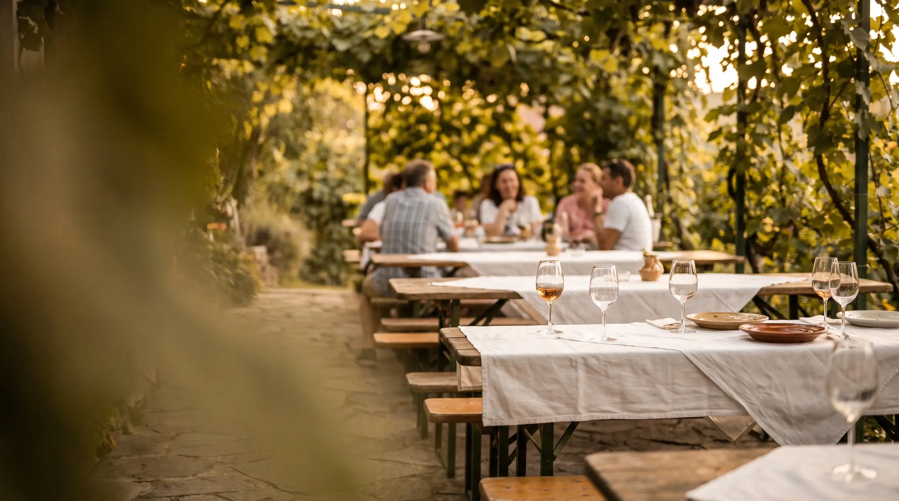
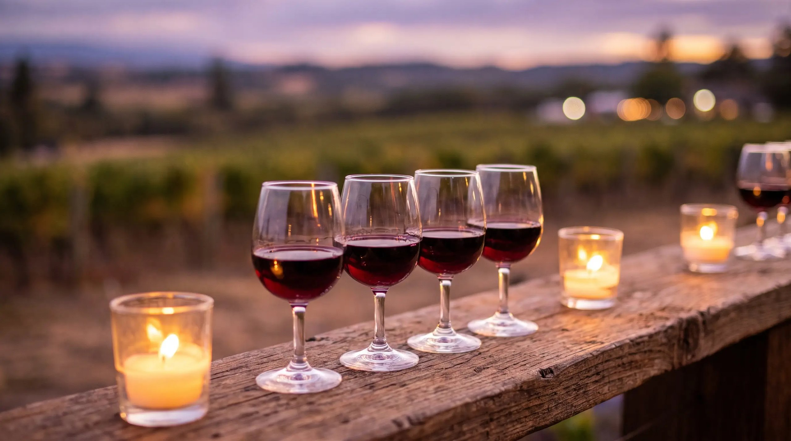

Bestellung bis 5. 11.
07.–08.November
Stelzen-Wochenende
Unsere legendären Stelzen — im Lokal oder zum Abholen. Senf, Kren, Krautsalat, Brot und Wein nach Wahl. Vorbestellung unbedingt erforderlich.

Weinbau & Heuriger · Perchtoldsdorf
Eigener Weinkeller, Küche den ganzen Tag, Gastgarten unter den Reben und ein Blick über Wien, den man nicht vergisst. Mitten in Perchtoldsdorf.
Save the Date
Achtmal im Jahr stecken wir aus — jeweils rund drei Wochen, immer von Samstag bis Sonntag. Diese Termine sollten Sie im Kalender haben.
07.–08.November
Unsere legendären Stelzen — im Lokal oder zum Abholen. Senf, Kren, Krautsalat, Brot und Wein nach Wahl. Vorbestellung unbedingt erforderlich.

KOSTBARin ROT
Blauer Portugieser, Pinot Noir, Zweigelt und Zweigelt Barrique — je 80 ml, allein oder zu zweit. Unsere Art der Weinverkostung.

28.November
Licht aus, Kerzen an: ein besinnlicher Abend mit zwei 3-Gänge-Menüs zur Wahl. Inklusive Frizzante und Gruß aus der Küche, € 41 pro Menü.
termine.yaml) und zeigt automatisch „heute ausg'steckt" oder den nächsten Termin. Hier ist er statisch hinterlegt. [PLATZHALTER: vollständiger Terminkalender 2026/2027]Warum Neumayer
Wir verteilen Fackeln an Ihre Gäste und wandern gemeinsam in unsere Weingärten auf die Perchtoldsdorfer Heide — rund 20 Minuten Fußweg. Oben wartet eine Erfrischung und der Blick über ganz Wien.
Vier unserer Weine, je 80 ml, auf einem Brett serviert. Die ehrlichste Art, unseren Keller kennenzulernen — ohne gleich eine Flasche kaufen zu müssen.
Auch an Tagen ohne Ausstecken müssen Sie nicht verzichten: Unser Getränkeautomat im Eingangsbereich ist rund um die Uhr zugänglich — Wein, Traubensaft gespritzt, Traubensaft pur.
Das fertig angerichtete Buffet ab 5 Personen: Klassik, Mediterran, Kärnten, Käse, Brötchen — auf Wunsch individuell, mit Dessertbox.
Speisen & Wein
Vom gemischten Satz über Grünen Veltliner bis zum Zweigelt Barrique: Unsere Weine wachsen auf den Hängen über Perchtoldsdorf und werden im Haus ausgebaut. Dazu kommt, was die Jahreszeit hergibt — Spargel, Wild, Stelzen, und an Werktagen ein wechselndes Tagesmenü.
Feiern & Seminare
Geburtstag, Hochzeit, Weihnachtsfeier oder Seminar: Wir richten Ihre Veranstaltung aus, wann und wie Sie möchten. Zwei Ebenen, ein eigenes Stüberl, im Sommer der Gastgarten.
Menü nach Absprache, Kinderspielplatz und Spielecke für die Kleinen.
Stüberl für Ihre Veranstaltung, Pausenbetreuung aus der Küche, Weinverkostung als Programmpunkt.
Das Extra, das bleibt: gemeinsame Wanderung in den Weingarten mit Wien-Blick.
Ab Hof
Rund 188 Tage im Jahr ist bei uns nicht ausg'steckt. Wein gibt es trotzdem — im Karton, aus dem Automaten oder als Geschenk.
Im Eingangsbereich, täglich rund um die Uhr: Wein, Traubensaft gespritzt, Traubensaft pur.
Der klassische weiße Spritzer in der 0,33-l-Glasflasche mit Drehverschluss — recycelbar.
Holzbox mit zwei Gläsern und einer Flasche Wein. [PLATZHALTER: Preis bestätigen]
Reservierung
Kein Formular-Dschungel: Datum, Uhrzeit, Personen — fertig. Wer lieber spricht, ruft an; wir sind unter 0664 2110825 für Sie da.
Schritt 1
Kalender mit den Aussteckterminen — nur an Tagen, an denen wir ausgesteckt haben, ist eine Reservierung möglich.
Schritt 2
Nur realistisch buchbare Zeiten, Personenzahl über Plus und Minus statt Dropdown. Ab 11 Personen geht es zur Feieranfrage.
Schritt 3
Name, Telefon oder E-Mail — keine Registrierung, keine unnötigen Pflichtfelder. Bestätigung sofort.
Kontakt & Anfahrt
Weinbau & Heuriger Neumayer
Sonnbergstraße 89
2380 Perchtoldsdorf, Österreich
Telefon +43 664 211 08 25
E-Mail christian@weinbauneumayer.at
Mo–Sa 10:30–23:00 · So 10:30–22:30